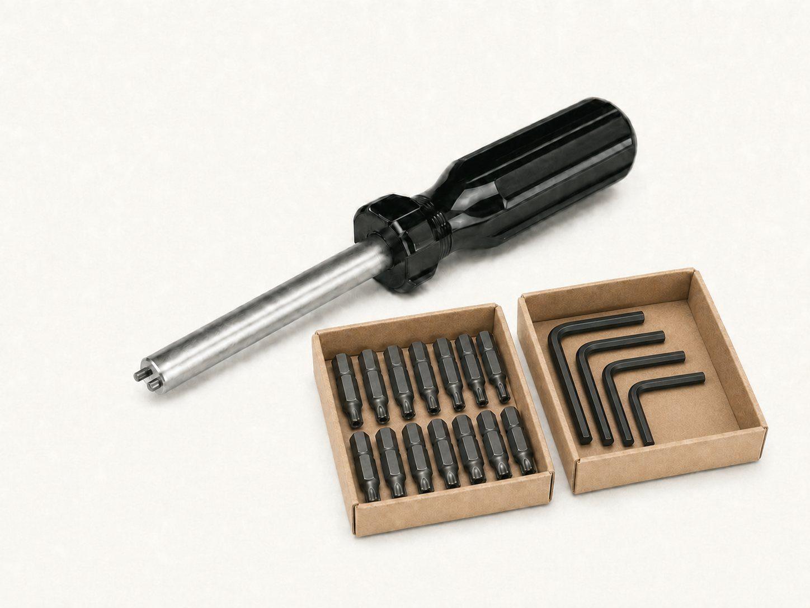

Security Drivers & Bit Kits
Find security hand drivers, bit handles, Tri-Groove handles, one-way removal tools, and kits by part number. Check the listed contents against the fasteners you need to install or service.

Sizes & part numbers
Select a part number to start a quote. Catalog listings are reference configurations; availability is confirmed with your inquiry.
Magnetic hand drivers (2)
Source: Screw & Supply catalog, page 10. Confirm current availability and exact configuration when ordering.
Pin-in 6-lobe hand drivers (10)
| Part number | Drive size |
|---|---|
| HDTT07 | T-7 |
| HDTT08 | T-8 |
| HDTT09 | T-9 |
| HDTT10 | T-10 |
| HDTT15 | T-15 |
| HDTT20 | T-20 |
| HDTT25 | T-25 |
| HDTT27 | T-27 |
| HDTT30 | T-30 |
| HDTT40 | T-40 |
Source: Screw & Supply catalog, page 10. Confirm current availability and exact configuration when ordering.
Spanner hand drivers (6)
Source: Screw & Supply catalog, page 10. Confirm current availability and exact configuration when ordering.
Tri-Groove handles (2)
| Part number | For socket part numbers |
|---|---|
| TRIH-1 | TRS04, TRS06, TRS10 |
| TRIH-2 | TRS20, TRS30, TRS40 |
Source: Screw & Supply catalog, page 10. Confirm current availability and exact configuration when ordering.
One-way screw removal tools (3)
| Part number | Catalog-listed screw sizes |
|---|---|
| SSTM06-8 | #4, #6, #8 screws |
| SSTM10-12 | #10, #12 screws |
| SSTM14 | #14, 5/16", 3/8" screws |
Source: Screw & Supply catalog, page 10. Confirm current availability and exact configuration when ordering.
Security tool kits (5)
| Part number | Kit type | Catalog-listed contents |
|---|---|---|
| MSPK1/4-F | Spanner bit kit | MHD1/4 driver and 6 spanner bits: #4, #6, #8, #10, #12, #14 |
| T6TK | 6-lobe bit set | MHD1/4 driver and 12 bits: T8, T9, T10, T15, T20, T25, T27, T30, T40, T45, T50, T55 |
| TTKK | 6-lobe L-key kit | 8 keys: T8, T10, T15, T20, T25, T27, T30, T40 |
| THBK | Pin-in hex bit kit | MHD1/4 driver and 8 bits: 3/32", 1/8", 9/64", 5/32", 3/16", 7/32", 1/4", 5/16" |
| TRBH20 | Tri-Groove tool kit | TRIH-1 handle and TRS04, TRS06, TRS10 sockets |
Source: Screw & Supply catalog, page 11. Confirm current availability and exact configuration when ordering.
Common questions
- Which driver format should I choose?
- Use a dedicated hand driver for a particular drive and size, an interchangeable handle for compatible insert bits, or a set for several sizes. Match the tooling to your installed fasteners.
- Does a kit include every drive size?
- No. Each kit has specific listed contents. Compare those contents with your equipment before ordering; the bit and L-key ranges differ.
- Will all bits fit the magnetic hand drivers?
- The listed magnetic drivers accept 1/4-inch shanks. The catalog lists T45-T55 insert bits with 5/16-inch shanks; confirm holder requirements and kit compatibility when ordering.
- How are Tri-Groove handles selected?
- TRIH-1 is listed for TRS04, TRS06, and TRS10 sockets. TRIH-2 is listed for TRS20, TRS30, and TRS40. Confirm the socket first, then the handle.
- Can you help identify a removal tool or replacement component?
- Yes. Send the fastener or tool part number, size, photo, quantity, and access restrictions. One-way removal-tool suitability depends on the head and installation.
Match the kit to the installed security fasteners
Security Bits & Keys →
Individual insert bits and L-keys, selected by drive system, drive size, and tool format.
Drive Guide →
Helps identify and compare pin-in 6-lobe, pin-in hex, spanner, one-way, and Tri-Groove systems.
Request Tooling Help →
Photographs, part numbers, samples, or equipment lists can help identify the tools you need.
Pin-in 6-lobe, pin-in hex, and two-hole spanner systems use matching security bits, keys, or drivers. Tri-Groove hardware instead uses external security sockets →, and one-way screws → have different installation and removal considerations. Don't assume a conventional multi-bit kit includes Tri-Groove sockets or one-way removal tooling.
Where organized security tooling helps
- Field Service & MRO →
Supports field technicians and MRO tool cribs with organized kits.
- Machinery Guarding & Panels →
Helps installation crews service guards and access panels.
- Electronics & Electrical Enclosures →
Supports security integrators servicing electrical enclosures.
- Detention & Institutional →
Supports facilities and maintenance teams servicing institutional hardware.
- Transit, Rail & Signage →
Supports production and OEM assembly of transit fixtures.
- Utility & Infrastructure →
Supports maintenance teams servicing utility enclosures and infrastructure.